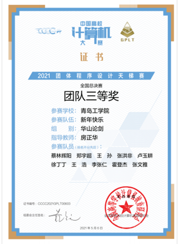
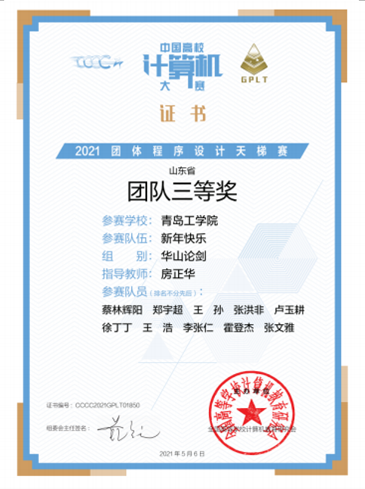

△蔡林辉阳、郑宇超、王孙等同学荣获全国总决赛团体三等奖

△蔡林辉阳、郑宇超、王孙等同学荣获山东省团体三等奖
团体程序设计天梯赛是一项面向大学生的计算机编程比赛，旨在提高学生的编程能力和团队合作能力。该比赛由中国大学生程序设计竞赛（ACM-ICPC）组委会主办，是中国最具影响力和参与度最高的计算机竞赛之一。
我们的学子在团体程序设计天梯赛中获得了团体三等奖。这表明他们在比赛中的表现非常出色，成功解决了复杂的编程问题。团队成员之间的合作默契和高效沟通也为他们的胜利做出了重要贡献。它不仅能够锻炼学生的编程技能，提高他们解决问题的能力，还能够增强学生的团队意识和合作能力。
我们的学子在团体程序设计天梯赛中的表现，得到了评委和其他学校的认可和赞赏。他们的成绩不仅仅证明了他们的编程实力，也展示了我校在计算机科学领域的教学和培养水平。
这些奖项的获得，不仅为我校增添了光彩，也给其他学子树立了学习的榜样。我们相信，未来的学子们会在团体程序设计天梯赛和其他相关比赛中取得更多的成绩，为学校争光。